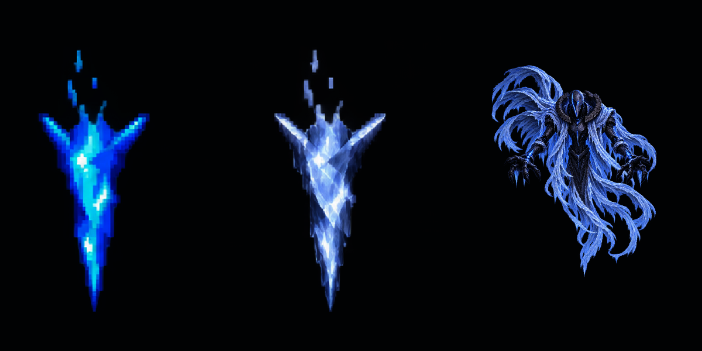

<!doctype html>
<html lang="ko"><meta charset="utf-8"><meta name="viewport" content="width=device-width,initial-scale=1"><title>고드름 · AirBoss 질감 비교</title>
<style>body{margin:0;background:#101621;color:#e4edff;font:16px system-ui,sans-serif}main{max-width:1200px;margin:32px auto;padding:0 20px}h1{font-size:25px;margin-bottom:8px}p{color:#afbed3;line-height:1.6}.labels{display:grid;grid-template-columns:repeat(3,1fr);text-align:center;margin:25px 0 8px;font-weight:600}.labels span:nth-child(2){color:#b5d4ff}img{display:block;width:100%;background:#000;border-radius:12px}nav{display:flex;gap:18px;align-items:center;flex-wrap:wrap;margin-top:18px}button{background:#d5e5ff;color:#10213b;border:0;border-radius:8px;padding:10px 22px;font:inherit;cursor:pointer}input{flex:1;min-width:180px;accent-color:#94c0ff}small{display:block;margin-top:18px;color:#8fa2bd;line-height:1.6}</style>
<main><h1>고드름 · AirBoss 질감 비교</h1><p>기존 배치와 윤곽을 유지하고 은청색 얼음 표면을 적용했습니다. 12프레임 · 12FPS · 1초 반복.</p><div class="labels"><span>기존 고드름</span><span>새 AirBoss 버전</span><span>AirBoss 참조</span></div><nav><button id="toggle">일시 정지</button><input id="seek" type="range" min="0" max="11" value="0" aria-label="프레임"><output id="number">01 / 12</output></nav><small>격리된 Unity 미리보기에서 새 클립의 12개 키를 샘플링한 렌더입니다. 두 고드름은 같은 Scale이며, 보스는 화풍 비교를 위해 높이를 맞췄습니다. 실제 씬의 배치 크기·이동·피해 검증 화면은 아닙니다.</small></main>
<script>const images=Array.from({length:12},(_,i)=>{const im=new Image;im.src=`PreviewFrames/Frame_${String(i+1).padStart(2,'0')}.png`;return im});const frame=document.querySelector('#frame'),seek=document.querySelector('#seek'),number=document.querySelector('#number'),toggle=document.querySelector('#toggle');let playing=true,current=0,base=performance.now();function show(n){current=n;frame.src=images[n].src;seek.value=n;number.value=`${String(n+1).padStart(2,'0')} / 12`}toggle.onclick=()=>{playing=!playing;base=performance.now()-current*1000/12;toggle.textContent=playing?'일시 정지':'재생'};seek.oninput=()=>{playing=false;toggle.textContent='재생';show(Number(seek.value))};function tick(t){if(playing){const n=Math.floor((t-base)*12/1000)%12;if(n!==current)show(n)}requestAnimationFrame(tick)}requestAnimationFrame(tick);</script></html>
